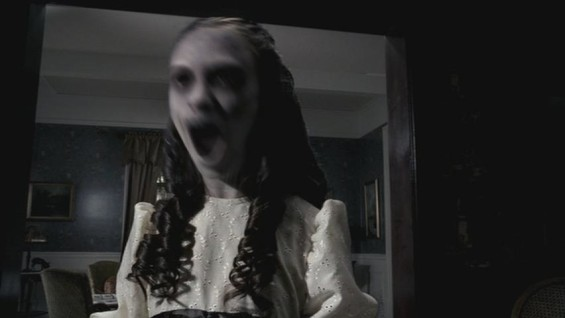

Привидения в сериале «Сверхъестественное»

Приведения – сколько легенд и слухов витает вокруг этих образов. Просто не счесть! При чем, в каждой народности и во все времена. Что же на самом деле представляют собой эти загадочные существа? Чем руководствуются потусторонние духи – злыми или добрыми намерениями? По традиции считается, что приведение – это душа умершего, привязанная к реальной жизни по тем или иным причинам. Нередко люди и сами пытаются связаться с потусторонними духами и вступают в спиритические сеансы. А иногда они не заставляют себя долго ждать и являются нам сами.
Вера в существование духов умерших существует с древних времен, когда душам поклонялись, проводили разные обряды, чтобы ублажить зловещий дух. Однако приведение не означает лишь человеческий облик души, духа. Легенды описывают совершенно разные образы потусторонних явлений.
Помимо всего прочего, явление приведения или некоего духа может сопровождаться определенными звуками, криками, изменением температуры (становится холодно), появлением неприятного запаха серы, а также обеспокоенностью живых существ или выходом из строя всевозможных электрических приборов, включая освещение.
Приведения нередко имеют постоянство своего появления. Например, являться постоянно одному и тому же человеку или появляться в одном и том же месте, удерживающем призрака по тем или иным причинам. Иногда духи даже имеют способность говорить на понятном человеку языке. И еще хуже, когда приведения имеют огромную силу и способны причинить вред, ранить или даже убить свою жертву.
Понятно, что наука не признает существования подобных явлений. В силу той причины, что не может достоверно доказать или объяснить появление приведений. Тем не менее, свидетельства людей продолжают появляться в средствах массовой информации и по сей день. Научные деятели приписывают их галлюцинациям, иллюзиям, миражам, дефектам съемочной аппаратуры, сознательной мистификации и влиянию мифов и легенд.
Известный телесериал «Сверхъестественное», чей сюжет построен именно на подобных явлениях, тоже не смог обойти приведений стороной. Здесь явление духа объясняется удержанием умершего человека в реальном мире определенными эмоциями: любовью, злостью, тоской или замешательством.
Здешние духи привязаны к определенным событиям, людям и объектам. Иногда они даже вселяются в предметы. Они одержимы жаждой мести или желанием восстановить справедливость. Приведения блуждают в реальном мире, не имея ни малейшей возможности соприкоснуться с ним, вернуться сюда. Они находятся в окружении себе подобных – потерянных душ. И со временем духи так или иначе превращаются в нечто, несущее беду и горе, страх и несчастья.
Для того чтобы уничтожить насаждающее приведение, следует согласно теории Винчестеров, отыскать могилу умершего, раскопать, достать кости и посыпанные солью сжечь их. Также можно на некоторое время оградиться от неспокойного духа, обсыпав солью двери, подоконник и прочие проемы.
Весьма красочной стала серия об этих самых приведениях номер 9 в пятом сезоне – «Настоящие охотники за приведениями». Здесь братья попадают на шоу в честь серии книг, написанных Чаком и в точности совпадающих с их реальной жизнью. Дин и Сэм встречают фанатов своих образов на каждом шагу действующего отеля, где, кстати, и проходит вечеринка. Заманить их на такое событие смогла Бэкки – влюбленная в образ Сэма подружка писателя. На фанатской вечеринке также собрались переодетые приведения, злодеи с крюками вместо рук или зашитыми мешками на головах.
Зрелище явно раздражает братьев Винчестеров, и они уже было собрались пить по этому поводу, как вдруг в отеле начинают происходить весьма странные события. Выяснить положение ситуации мешает Дину и Сэму происходящий в это время в здании маскарад в их честь. Однако им удается выяснить, что когда-то в отеле располагался приют для детей. Страшным событием закончилась история этого здания. Воспитательница убила четверых мальчишек, один из которых был ее собственным сыном. Его нашли без скальпа.
И пока призраки воспитательницы и маленьких детей пугают собравшихся в отеле гостей, Сэм и Дин вместе со своими двумя фанатами отправляются на кладбище в поисках могилы этой самой воспитательницы, покончившей с собой. Фанаты смело ступают в сторону кладбища, думая, что это всего лишь сценарий игры, но, когда дело доходит до раскопки могил, те собираются уходить. Тем не менее, Винчестеры предлагают им неоспоримую победу и обещанный сертификат на 50 долларов за находку. Компания охотников сжигает кости и возвращается в отель. Однако следом за этим один за одним начинают погибать посетители мероприятия.
Братья в растерянности, что же они сделали не так. Мальчик-призрак, который и был сыном воспитательницы, подсказывает Сэму и Дину, что на самом деле его мама не убивала его. Скальп сняли с мальчишки его сверстники, и убитая горем женщина убивает этих трех, а после и себя.
Получается, что Винчестеры наоборот раскрепостили озлобленных духов, которые боялись только свою воспитательницу. Приведения же перекрывают двери и окна, то есть никто не может покинуть здание, а значит, вернуться на кладбище и уничтожить останки детей-убийц тоже. Тогда братья обращаются за помощью к актрисе, присутствовавшей на празднике, чтобы та сыграла роль их воспитательницы, а также к своим провожатым фанатам. Пока лже-воспитательница отвлекает внимание детей, двое помощников Винчестеров выходят из отеля и направляются прямиком на кладбище. Сэм и Дин в это время сражаются с духами до последнего, чуть не став их очередными жертвами.
В итоге зло было побеждено, а Сэм и Дин уехали с осознанием своей значимости в этом обществе и мире в целом.